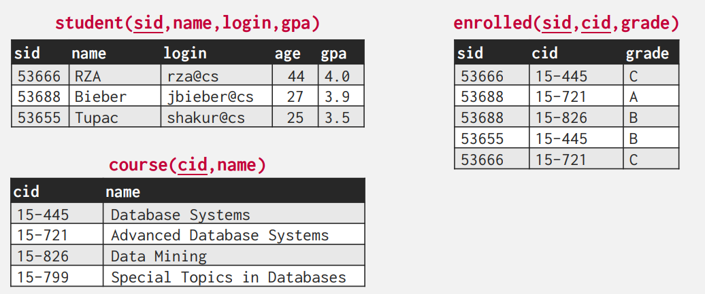
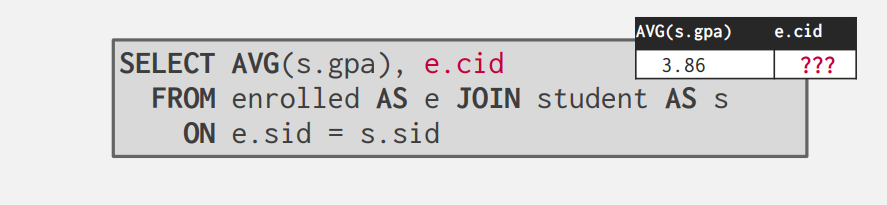
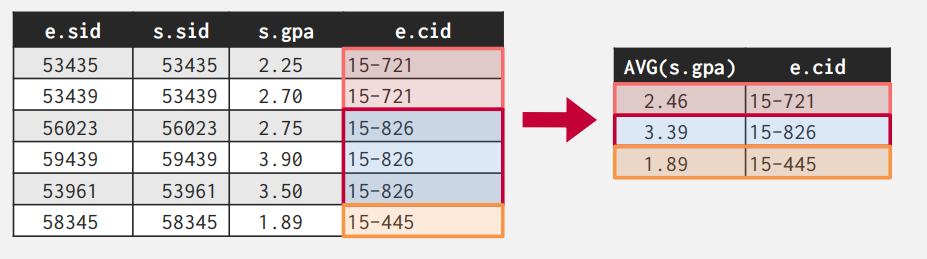
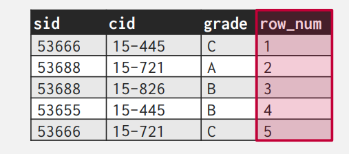
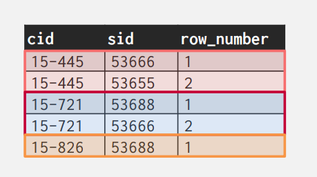

Mordern SQL¶
RELATIONAL LANGUAGES¶
关系语言主要包含三种：
- Data Manipulation Language (DML)
- Data Definition Language (DDL)
- Data Control Language (DCL)
其中 DML 我们在第一节中已经介绍过了。DDL 适用于定义数据库中的表等结构的语言，而DCL是用于数据库的安全维护的语言(i.e. 权限等)。
Warning
需要额外注意的一点是，SQL 是基于 bags(可能存在复制)来实现的，而关系是建立在集合上的（不可能存在重复）。
这一节主要涉及SQL的
- Aggregations + Group By
- String / Date / Time Operations
- Output Control + Redirection
- Window Functions
- Nested Queries
- Lateral Joins
- Common Table Expressions
在本节中我们假设有以下的数据库。 
AGGREGATES¶
返回一个单一的值，一般是对于一系列元组的计算。
- AVG(col) → Return the average col value.
- MIN(col) → Return minimum col value.
- MAX(col) → Return maximum col value.
- SUM(col) → Return sum of values in col.
- COUNT(col)→ Return # of values for col.
Example
当我们需要统计有多少学生的 login 中有 '@cs' ，我们可以通过
当我们统计这些学生的平均绩点事实上，COUNT括号中的东西并不重要，因为此时数据库系统知道我们只需要统计数量，而并非计算其值。
我们不能够在AGGREGATE外面直接合并其他的行，这是一个未定义的行为。（因为他们可能具有不同的长度，并且毫无意义） 例如，下面的行为毫无意义。  所以如果 Non-aggregate 在 SELECT 中出现时，一定需要和 GROUP BY 语句相连。 正确的做法是:
首先我们通过 JOIN 语句获得了 e 与 s 所有可能的组合，然后我们通过 e.sid = s.sid 这个条件来进行筛选。然后我们根据 e.cid 进行分组，分别计算每一组的平均绩点。这样的 aggregate 语句才是有意义的。
对于每一个出现的非 aggregate 的值，我们都需要将其放入 GROUP BY 中。
SELECT AVG(s.gpa), e.cid, s.name
FROM enrolled AS e JOIN student AS s
ON e.sid = s.sid
GROUP BY e.cid, s.name
现在我们考虑对 aggregate 的计算结果进行筛选，我们需要用到 HAVING 语句。（其实相当于 GROUP BY 的 WHERE）
例如我们想查看上面结果中 GPA 大于 3.9 的值。
SELECT AVG(s.gpa), e.cid
FROM enrolled AS e JOIN student AS s
ON e.sid = s.sid
GROUP BY e.cid
HAVING AVG(s.gpa) > 3.9;
STRING¶
STRING TYPE¶
不同的 SQL 的实现采取了不同的字符串类型。MySQL 的字符串最为特别，因为在字符串计算时对于大小写并不敏感。
| Version | String Case | String Quotes |
|---|---|---|
| SQL-92 | Sensitive | Single Only |
| Postgres | Sensitive | Single Only |
| MySQL | Insensitive | Single/Double |
| SQLite | Sensitive | Single/Double |
| MSSQL | Sensitive | Single Only |
| Oracle | Sensitive | Single Only |
STRING OPERATIONS¶
LIKE 字符串匹配¶
LIKE 关键字可以用于字符串的匹配。这与 Linux 下的通配符比较类似。
- '%' 可以匹配任何的子串（包括空的字符串）
- '_' 可以匹配一个字符（但要求字符不能为空）
同时也支持字符串正则匹配。（但ANDY也不知道SQL标准的是否支持这个）
例如:
SELECT * FROM enrolled AS e
WHERE e.cid LIKE '15-%'
SELECT * FROM student AS s
WHERE s.login LIKE '%@c_'
SQL 还定义了不少的字符串函数，例如 CONCAT 连接字符串、 SUBSTRING 裁剪字符子串 、UPPER用于小写转大写。
SELECT SUBSTRING(name,1,5) AS abbrv_name
FROM student WHERE sid = 53688 -- 从第一个字符开始，连续的五个字符
SELECT * FROM student AS s
WHERE UPPER(s.name) LIKE 'KAN%' -- 全部转换为大写
但我们需要额外注意字符串的连接
Warning
在不同的DBMS中对于字符串连接有着不同的规定。
DATE AND TIME¶
事实上在SQL中 DATE 、 TIME 和 TIMESTAMP 是三种不同的类型。但是由于各个版本的实现都不尽相同，这里的实际情况比较复杂：部分数据库可以用 NOW 函数来获取当前的日期和时间戳；SQL 标准规定了 CURRENT_TIMESTAMP 这个关键字。（但在 MySQL 中这里居然也可以是个函数）。我们可以通过 DATE() 进行类型转换，可以通过CAST 进行转换。有的数据库 DATE 类型可以直接相减；有的不能，但有 DATEDIFF 函数（对，又是 MySQL）。所以具体的操作需要参考具体的DBMS实现。
OUTPUT REDIRECTION¶
在 SQL 标准中，我们可以向Linux 的管道一样重定向输出。但同样的，这里存在诸多的语法差异，例如：
SELECT DISTINCT cid INTO CourseIds
FROM enrolled; -- SQL 92
CREATE TABLE CourseIds (
SELECT DISTINCT cid FROM enrolled); -- MySQL
SELECT DISTINCT cid
INTO TEMPORARY CourseIds
FROM enrolled; -- Postgres
这里有两种可能的情况，一种是我们重定向的表格未定义，此时将会新建一个表。另一种是表格已存在，我们将结果拼接到表格后(值得注意的是，此时一定有相同的列数)。
WINDOW FUNCTIONS¶
WINDOW FUNCTION 类似于 Python 中的切片的操作。这里的 WINDOW 相当于一个滑窗，我们可以指定 FUNCTION 所作用的范围和方式。
Sytax:
SELECT ... FUNC-NAME(...) OVER (...) FROM tableName
例如如果我们想获得学生注册表格中的行数:
- ROW_NUMBER()→ # of the current row
- RANK()→ Order position of the current row.

但同样的我们可以通过 PARTITION BY 来指定我们的分类，这里相当于按照课程进行分类。于是我们的 ROW_NUMBER 就变为了从每一类中计算的行数。

OVER 里还支持 ORDER BY 的关键字。这意味着我们的函数将在排序后的结果上运行。
下面给出了一个复杂的例子。这里是从学生中选出第二高的成绩，运用到了嵌套查询。
SELECT * FROM (
SELECT *, RANK() OVER (PARTITION BY cid
ORDER BY grade ASC) AS rank
FROM enrolled) AS ranking
WHERE ranking.rank = 2
NESTED QUERIES¶
在一个查询中我们可以插入另一个查询，这样可以构成更复杂的查询。
- 对于 DBMS 而言这是一个优化问题
- 嵌套可能发生在查询的各个位置
在嵌套查询处理两层查询的关系时，可以有如下的谓词:
- ALL Must satisfy expression for all rows in the sub-query.
- ANY Must satisfy expression for at least one row in the sub-query.
- IN Equivalent to '=ANY()' .
- EXISTS At least one row is returned without comparing it to an attribute in outer query.
LATERAL JOINS¶
LATERAL 算符允许引用相邻的另一个嵌套查询的内容
如果我们想知道每门课程的注册学生人数和平均 GPA。按注册人数降序排列。